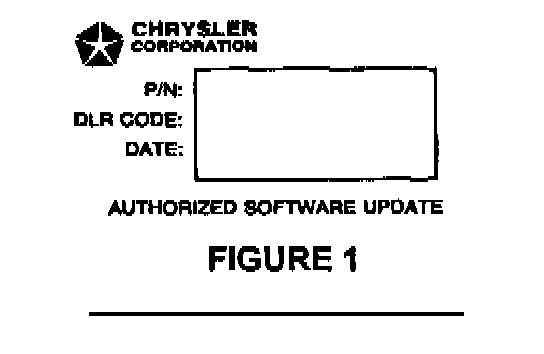
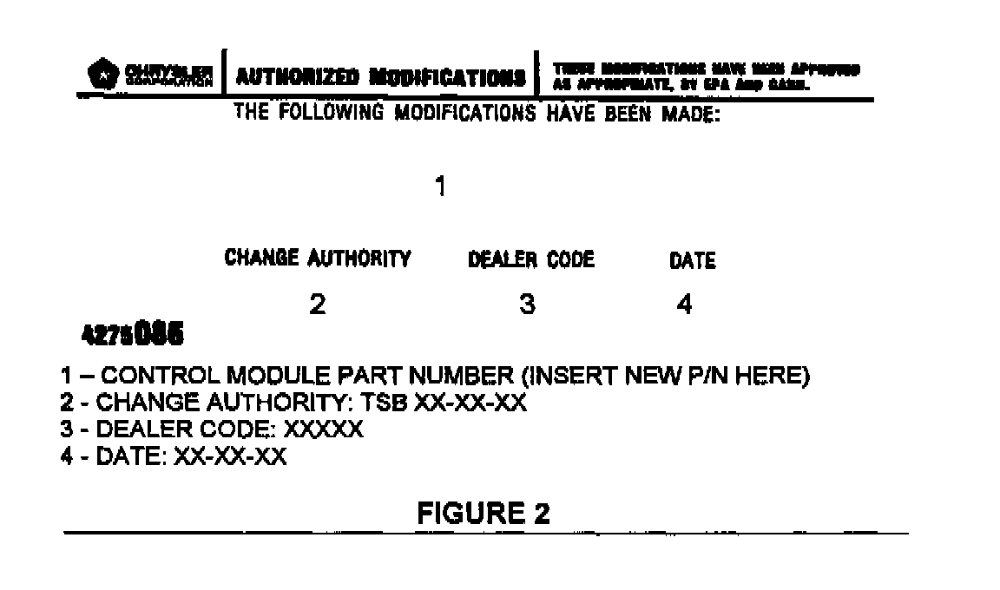

Repair Procedure
1. Log onto the MDS2 system.2. Connect the MDS2 and DRB III(R) to the vehicle and switch the ignition key to "ON".
3. Use the arrow keys and select # 2 CONNECT TO MDS2 on the DRB III(R) MAIN MENU SCREEN.
4 Use the arrow keys and select # 2 RUN MDS2 APPLICATION on the ORB III(R) MAIN MENU SCREEN.
NOTE:
ONCE MDS2, DRB III(R), AND VEHICLE COMMUNICATION HAS BEEN ESTABLISHED, THE "CANNOT READ VIN FROM DRB III(R)" MESSAGE (ON THE MDS2) WILL BE REPLACED BY THE VEHICLE VIN. PRESS THE "OK" BUTTON ON THE MDS2 TO REQUEST A MDS2 SESSION FOR THE VEHICLE VIN INDICATED. PRESS THE "OK" BUTTON WHEN ASKED TO BEGIN SESSION.
5. Select the FLASH tab on the MDS2.
6. Select READ PART NUMBERS FROM VEHICLE and click SHOW UPDATES on the MDS2. Press the "OK" button.
NOTE:
IN ABOVE STEPS # 5 AND/OR # 6, A MESSAGE MAY APPEAR THAT INDICATES NO UPDATES ARE AVAILABLE. IF THIS OCCURS, MAKE SURE YOUR DIAGNOSTIC EQUIPMENT IS OPERATING AT THE LATEST SOFTWARE LEVEL AS LISTED EARLIER IN THIS BULLETIN. IF THE LATEST SOFTWARE IS INSTALLED, AND NO UPDATES ARE AVAILABLE, ANOTHER VEHICLE CONDITION EXISTS THAT WILL REQUIRE FURTHER INVESTIGATION.
7. Select the new software part number with the light pen and click UPDATE CONTROLLER SOFTWARE.
8. The MDS2 and ORB III(R) will prompt for any operator action needed during the remainder of the reprogramming process.
NOTE:
DUE TO THE PCM REPROGRAMMING PROCEDURE, A DTC MAY BE SET IN OTHER MODULES (EATX, BCM, MIC, SKIM) WITHIN THE VEHICLE, IF SO EQUIPPED. SOME DTC'S MAY CAUSE THE MIL TO ILLUMINATE. ALL DTC'S RELATE TO A LOSS OF COMMUNICATIONS WITH THE MODULE THAT IS BEING REPROGRAMMED. CHECK ALL MODULES, RECORD THE FAULTS, AND ERASE THESE FAULTS PRIOR TO RETURNING THE VEHICLE TO THE CUSTOMER. ERASE ANY FAULTS IN THE PCM ONLY AFTER ALL OTHER MODULES HAVE HAD THEIR FAULTS ERASED.
NOTE:
THE FOLLOWING STEPS ARE REQUIRED BY LAW.

9. Type the necessary information on the "Authorized Software Update Label" p/n 04669020 (Figure 1) Attach the label to the JTEC PCM and cover the label with the clear plastic overlay.

10. Type the necessary information on the "Authorized Modification Label" p/n 04275086 and attach the label near the VECI label (Figure 2).